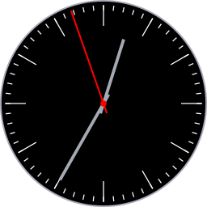

JSON Clock Viewer Patreon Page
JSON Clock displays clocks in a circular window. You can move, resize, and load clocks in JSON format.
Click and drag anywhere on the clock face to move it around the screen.
Hold Shift and click-drag to resize the window. Expand the window by moving down to the right. The window maintains a square aspect ratio.
When opening a JSON file it must conform to the app's schema.
The app comes with preloaded clocks. Each one can be selected and viewed without opening external JSON files.
Use the JSON -> Show JSON to view and copy JSON for the current clock.
The Edit menu provides the capability to copy and paste JSON for the current clock to the system Clipboard.
If a clock fails to load, ensure the JSON file conforms to the expected format. Loading error messages may help debug JSON issues.
Web (JavaScript): link
Java (Opensource): link